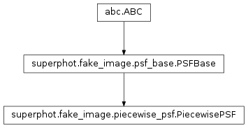

superphot.fake_image.piecewise_psf module¶
Class Inheritance Diagram¶
Declares the PiecewisePSF base class for piecewise PSF functions.
-
class
superphot.fake_image.piecewise_psf.PiecewisePSF(boundaries, pieces)[source]¶ Bases:
superphot.fake_image.psf_base.PSFBase
Base clas for PSFs defined on a grid of pieces.
-
__init__(boundaries, pieces)[source]¶ Define a PSF with the given boundaries.
Parameters: - boundaries – Dictionary with keys x and y giving the offsets relative to the center of the horizontal piece boundaries. The PSF is zero left of the first or right of the last x boundary as wall as below the first and above the last y boundary.
- pieces – The pieces making up the PSF should be a class inherited from PSFPiece.
Returns: None
-
-
superphot.fake_image.piecewise_psf.get_piece_index(boundaries, coordinate)[source]¶ Return the index of the piece along one axis containing the given coord.
Parameters: - boundaries – The offsets relative to the PSF center where different PSF pieces meet along the direction in which we are trying to locate the piece index.
- coordinate – The coordinate we are trying to find the piece index of.
Returns: - The index along the selected coordinate of the piece
containing x.
Return type: ind